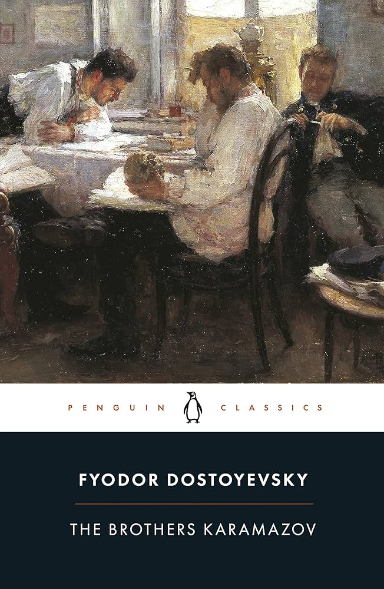
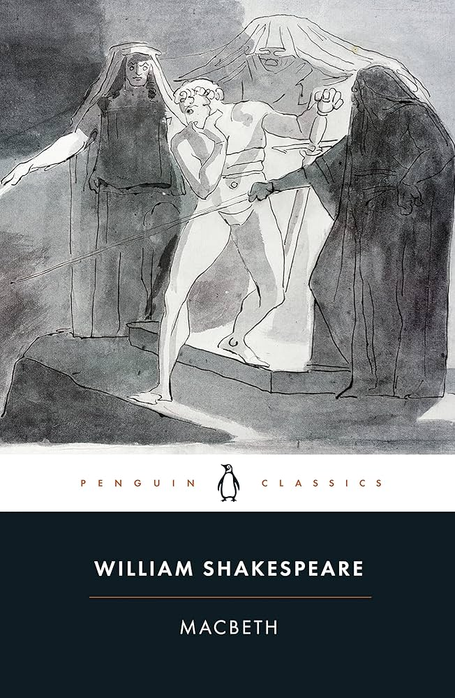
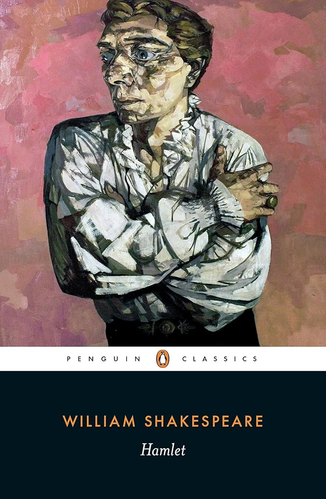
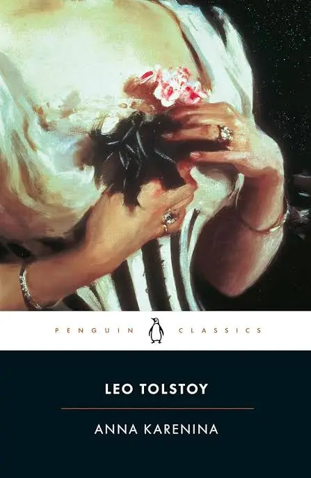
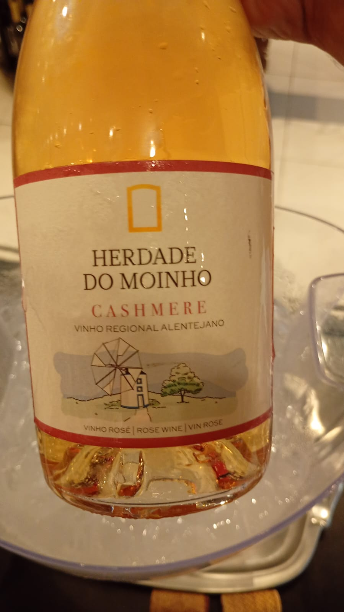

Estudos Atuais
HTML E CSS
Fontes paras estudo
FreeCodeCamp Ben Eater Over The WireLITERATURA
Leitura Atual

Leituras para 2026



| Livros Favoritos | Autores |
|---|---|
| Morros dos Ventos Uivantes | Emily Brontë |
| O Pequeno Principe | Antoine de Saint-Exupéry |
| O Mundo de Sofia | Jostein Gaarder |
| História do cinema: Dos clássicos mudos ao cinema moderno | Mark Cousin |
| Sapiens | Yuval Noah Harari |
Proximas Leituras
- Hamlet, Shakespeare
- Macbeth, Shakespeare
- Anna Kariênina, Tolstoi
- Iliada, Homero
- Odisseia, Homero
- Ulisses, James Joyce
- Moby dick, Herman Mellvile
- Eros o doce amargo, Anne Carson
INVESTIMENTOS
Termos
- Liquidez
- Liquidez é a facilidade e rapidez com que um ativo (investimento ou bem) pode ser convertido em dinheiro em espécie sem perda significativa de seu valor. Em suma, mede quão rápido você consegue "sacar" seu dinheiro para usá-lo. Dinheiro na conta corrente tem alta liquidez, enquanto imóveis têm baixa liquidez.
VINHOS
Vinhos Degustados

Rose bem claro, bastante lágrimas
Aromas de maçã bem vermelhinha, e frutas bem maduras de feira, algo de suco de goiaba talvez
No paladar, acidez alta, pouco álcool, goiaba
Indicar para: quem quer um vinho leve e bem frutado, algo fresco e que dê água na boca
Tomado no trabalho <3